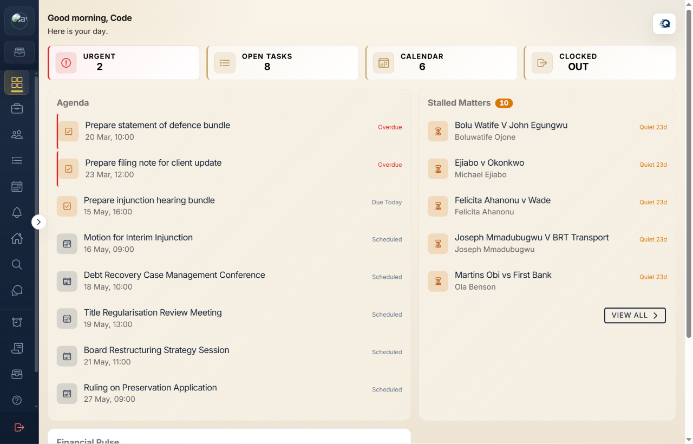
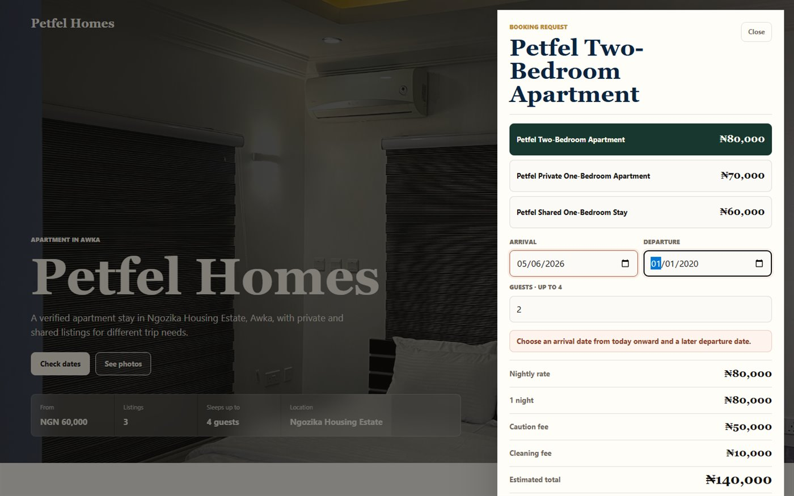
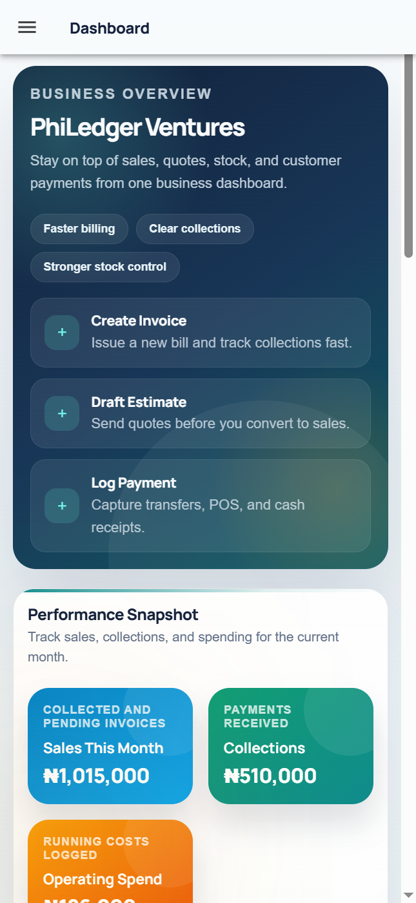
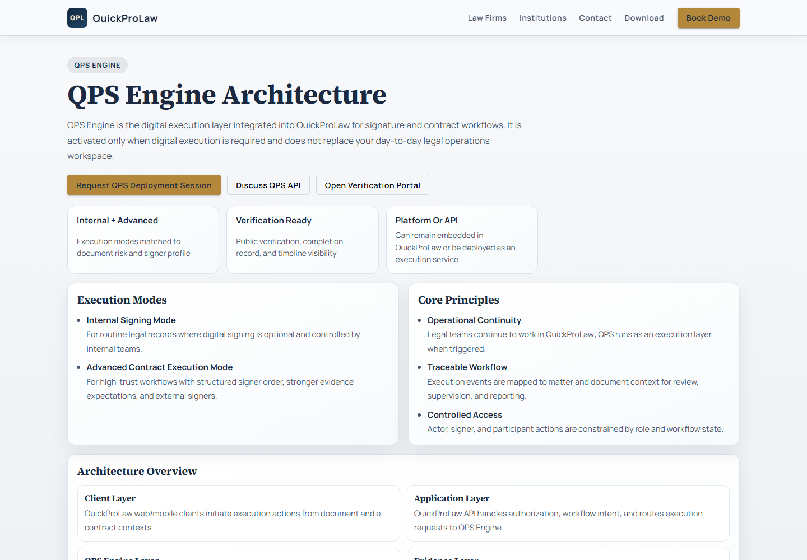
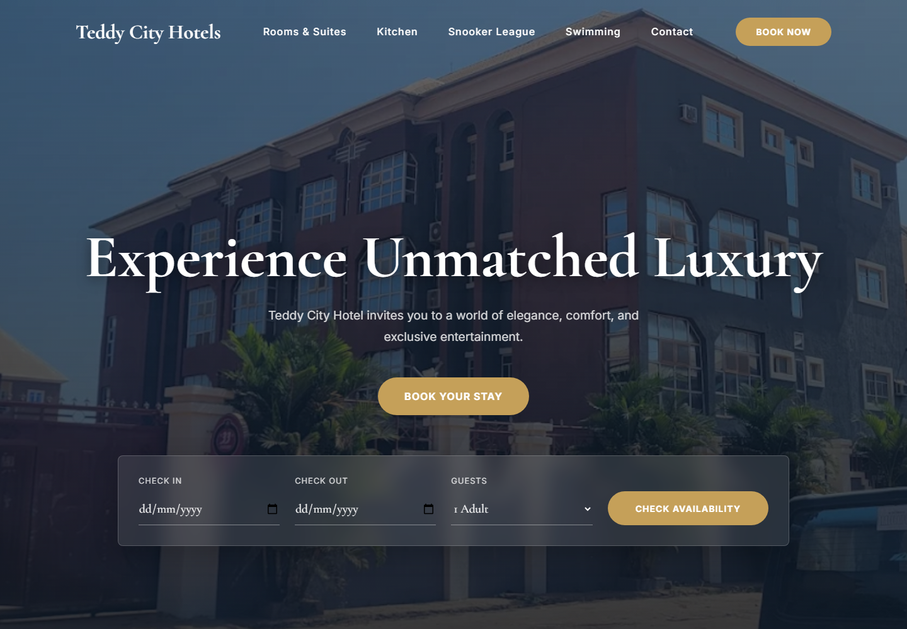
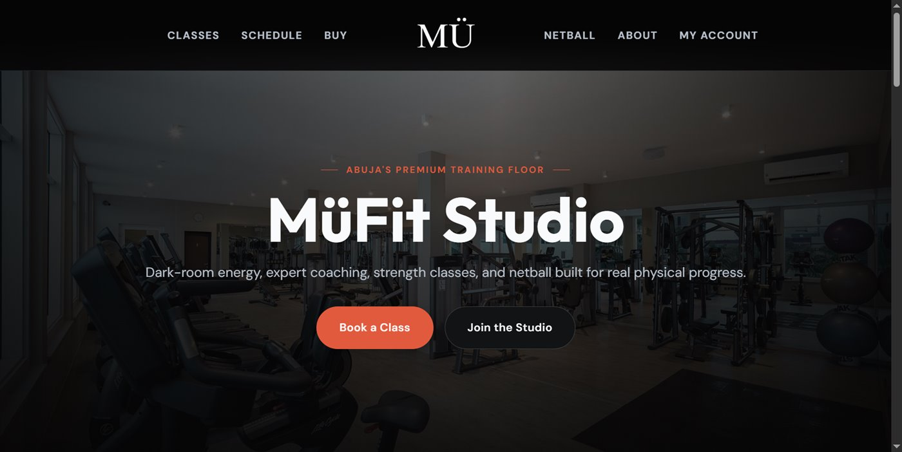
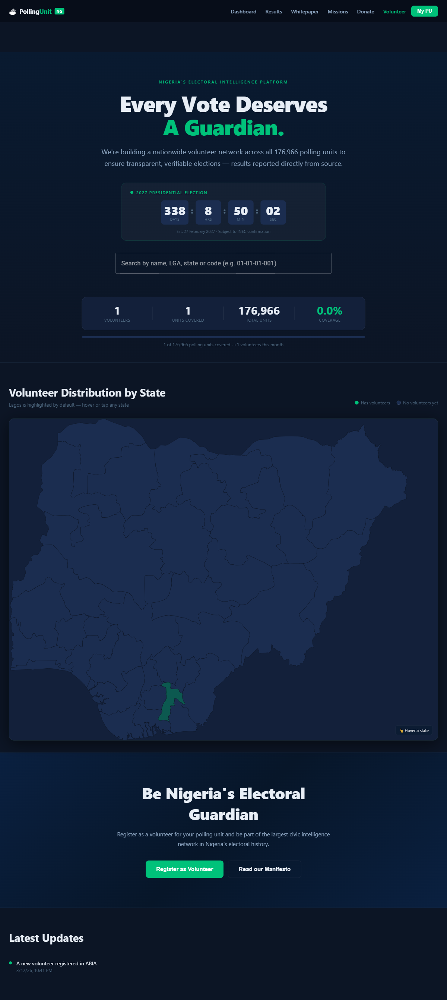

Structure workflows
Organize complex tasks so the next action and current status are clear.
Lead frontend developer ／ Product interfaces
I lead frontend development for operational products, from application architecture and workflows to responsive delivery and interface quality.
I turn complex workflows, permissions, records, and edge cases into interfaces that help people complete their work accurately and efficiently.
Since January 2020 at Parabolic Tech / Parabolic Capital, my work has covered legal operations, hospitality, business systems, local commerce, events, fitness, and civic information. I lead frontend architecture, interaction design, responsive implementation, and quality across public websites and operational applications.
Organize complex tasks so the next action and current status are clear.
Account for loading, empty, error, success, and permission states.
Keep forms, dashboards, and public pages usable on mobile and desktop.
Set consistent standards for components, accessibility, performance, and review.
Angular and TypeScript application structure, reusable components, typed data flows, and navigation across user roles.
Forms, search, filtering, status changes, approvals, and document journeys with clear progress and feedback.
Web and Ionic/Capacitor interfaces that preserve hierarchy, tap targets, and context on small screens.
Accessible controls, plain language, performance review, and error states that help users recover.
Frontend work across public websites, customer journeys, operational dashboards, and mobile applications.

Matter, task, deadline, document, and finance workflows that let legal teams see what needs attention next.
Frontend focus: dense dashboards and guided work
Property setup and booking journeys that connect an owner’s operating tools with a guest’s path to a stay.
Frontend focus: owner and guest journeys
Everyday business records brought into a navigable workspace for invoices, stock, payments, and reporting.
Frontend focus: record-heavy interfaces across devices
A focused signing journey where recipients can review, act, and understand completion without entering the main legal workspace.
Frontend focus: trust and clarity in a high-stakes flow
Consumer discovery, venue operations, and admin oversight, each with a clear interface for its own audience.
Frontend focus: multiple products in one family
A welcoming public experience paired with clear paths into rooms, bookings, amenities, and staff operations.
Frontend focus: guest discovery and operational clarity
Class discovery and member bookings shaped for a fast mobile experience, with staff views for attendance and schedules.
Frontend focus: mobile booking and member feedback
Public data lookup designed around fast search, clear results, and a simple path to polling-unit information.
Frontend focus: findability and readable resultsMy work spans early interface decisions, reusable patterns, implementation, review, and release readiness. The case notes show how I approach different audiences and workflows while maintaining a consistent standard for usability and technical quality.
Review the case notes